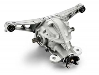
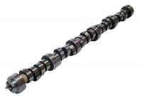

2003-2010 Dodge Viper SRT10 Visco Loc 2008 Limited Slip Differential 3.07 Gears - 05038307AE
| Part number | 05038307AE |
|---|---|
| Fits years | 2003-2010 |
| Models | Viper, SRT10 |
| Condition | Brand New, Used, Discontinued |
| Category | Mopar Performance Parts, Rear Axle / Differential |
Description
DISCONTINUED AS AN ASSEMBLY. COMPONENT PARTS MAY BE AVAILABLE BUT EXPENSIVE. OR, EMAIL US FOR THE RARE, USED UNIT.
Brand new and complete 2008-spec Visco Loc differential assembly with all new components and Mopar Performance Parts gear sets fully assembled to production specifications. Features:
· Aluminum housing with specialty cast-in bosses for Mopar Performance differential cooler fittings
· Bosses are drilled, tapped and plugged in three places, ready for cooler fitting installation· Production Trac-Lok with upgraded 7/16-inch diameter ring gear retaining bolts
· Improved design pinion seal
This is a direct replacement for 2003-06 and 2008 differential assemblies. Drop your lap times with more forward bite with the improvements to the Visco Loc limited slip.
Mopar Part #05038307AE
Ships in approximately 7-10 days, subject to Mopar stock
Archived 2025-07-20 · view original capture
More in Mopar Performance Parts

